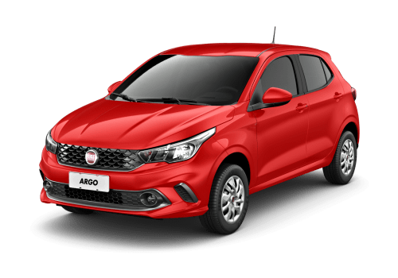
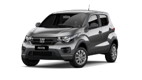
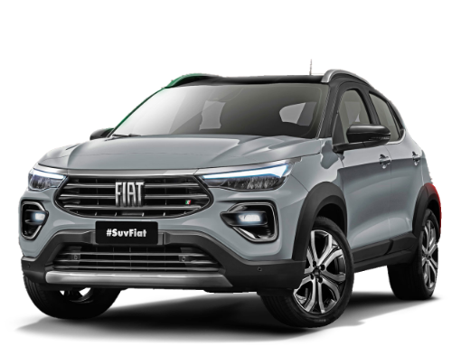
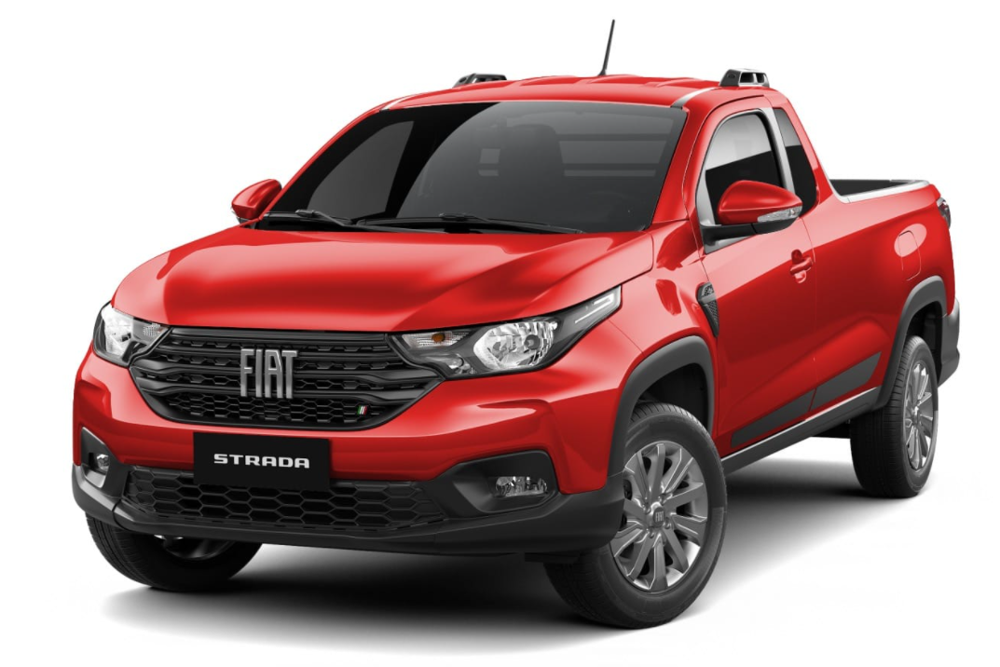

Fiat Argo Drive 1.0 0km 2022 vermelho: itens acima + banco do motorista com regulagem de altura, central multimídia Uconnect de 7 polegadas, ganchos de fixação e iluminação no porta-malas, rodas de aço estampado 6.0 x 15″ com calotas integrais + pneus “verde” com baixa resistência a rolagem 185/60 R15, sistema de monitoramento de pressão dos pneus, volante multifuncional, entre outros.
1.0 0km 2022: itens de série do Mobi 2022 são: airbag duplo, banco traseiro rebatível, faróis com máscara negra, freios ABS com distribuição EBD, controle eletrônico da aceleração e quadro de instrumento em LED com display digital de 3,5 polegadas.
Fiat Pulse chumbo 0km 2022 tem como itens de série: abertura elétrica do bocal de abastecimento, quatro airbags, alarme antifurto, alerta de não utilização do cinto de segurança para todos os ocupantes, ar-condicionado automático e digital, controle de estabilidade e tração, banco do motorista com regulagem de altura, barras longitudinais no teto, central multimídia com tela de 8,4" touchscreen, Apple Car Play e Android Auto sem fio, USB Tipo A e Tipo C, volante multifuncional, computador de bordo, direção elétrico, faróis de LED, lanternas de LED, sistema de partida em rampa, luz de condução diurna de LED, piloto automático, TC+, vidros elétricos em todas as portas, rodas de liga leve de 16 polegadas, sensor de estacionamento traseiro, monitoramento de pressão dos pneus, volante com regulagem de altura.
Strada 1.3 Cabine Plus 2022 0km vermelho – 11 segundos e 168 km/h. Cabine Dupla: 11,2 segundos e 169 km/h. Em termos de capacidade de carga, a cabine dupla é de 650 kg, a cabine simples é de 720 kg, o volume da primeira cabine é de 844 litros e o volume da segunda cabine é de 1354 litros.
